WA State Parks Challenge
Introduction
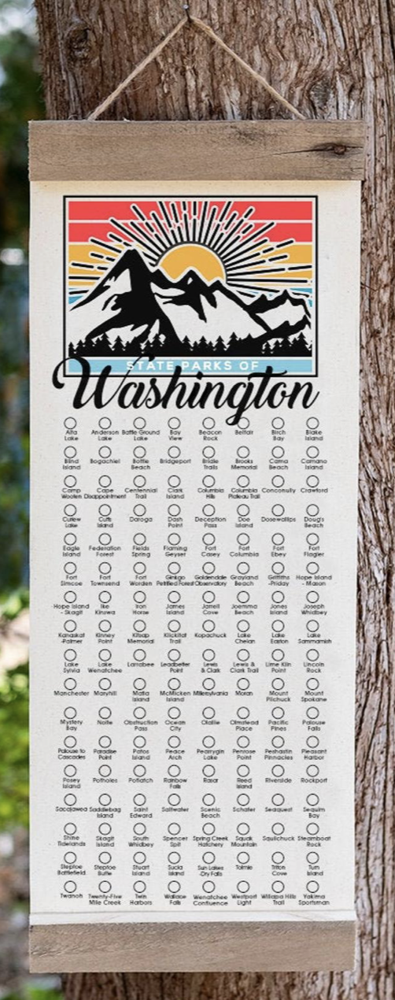
We had lost our sense of adventure, mostly. With two small children packing the car and enduring road trip eventualities — soiled car seats, endless questions, whining — creates significant homebody inertia. Getting out, especially in the short, damp days of a Northwest Winter, was often just too much. We needed motivation.
Busy professionals with weak spots for childish competitions and games, one of us gifted the other a Washington State Parks checklist banner — thanks Etsy — for Christmas. The challenge was on, the game afoot. Visiting State Parks is a sizable reduction in both investment and payoff, from say, counting continents, countries or even National Parks. We had checked the map; done right we could probably do 5-7 parks some days. Our reward would be picnic shelters and boat launches not grand geologic formations and soul-stirring vistas. Playgrounds not postcards.
There are a lot of state parks in Washington State, 139 in all, and not all are accessible by car. The good money would be on us not finishing this quest…and that’s OK, its the journey we seek. In our pre-child mid-twenties, we once visited the Grand Coulee dam. We’ve been to the Mima Mounds, overnighted in Warnambool (twice) and weathered a typhoon in Toba. We are no strangers to long journeys with small payoffs. We’ve experienced – and enjoyed – being surrounded by retirees, RV people and empty parking lots. Though now we are two car seats strong and have a tiny collapsible toilet in the hatch. Adventure takes no universal form.
Progress
| Name | Measure |
|---|---|
| Total | 139 |
| Visited | 37 |
| Remaining | 102 |
| Travel Details | |
| Miles Driven | 1311 |
| Miles Ferried | 47 |
| Miles Boated | 97 |
| Miles Hiked | 20 |
| Miles Paddleboarded | 1 |

Trip Reports
37) Kopachuck:
We are morning people. Most of our part visits occur early in the day and, as such, we are generally one of few cars in the lot. Beaches and trails to ourselves. Rolling into Kopachuck at 11:30 on a hot Sunday was out of character for us and left us with crowds to navigate.

A number of interweaving trails lead down to the beach; all were full of people headed one way or the other. Half way down, the eldest had an emergency need to go back up to the bathroom, so again we split. Meandering through groups – half masked, half not – on the rocky beach, I tucked us into a small little nest out the sun and the wind. Much of the action at the park was paddleboarders and kayakers launching for the crossing to Cutts Island State Park. Its not that far of a trip but a someone treacherous one on the weekend with all the powerboats criss-crossing the water.
Lunch, a brief swim and back to the car in time for naps on the ride home. We managed three parks today, but a bit at the expense of our sanity. The kids are good riders in the car, adventurous outdoorsmen and overall supportive of our parks quest, however, sometimes too many stops, too many ins and outs of the car wear us all out.
36) Manchester:

By water, Manchester State Park is just a few miles from Illahee. By land is a longer journey. Down through Bremerton, past the Naval Yards – an aircraft carrier was in, very cool – through the used car lots of Gorst, back up through Port Orchard, along Beach Drive to the peninsula, then back down again to the park. Long enough for one child to fall asleep, the other to get hangry and us to make one wrong turn and then an errant stop at Port Orchard Ford for picnic vittles (the navigator thought Google Maps was showing her Port Orchard Food).

We arrived, bereft of food but still full of spirit. The receding tide had left the main beach coated with drying and dying aquatic plants. In addition to that stale marine smell, it also meant treacherous footing. Soon, the elder child was splayed out on his back in the muck. While tending to him, the younger one attempted to eat the loose seaweed as well as some rocks. Our mood began to wane.
Zone coverage on the two children wasn’t working well, so we split up for a man-to-man defense, rendezvousing later at the old Torpedo Building. The de-activated naval mines out-front are a vivid reminder of the military preparations done in and around the Puget Sound during the first half of the 20th century. The overturned picnic tables and social distancing signs within a reminder of our current battle just as vivid.
35) Illahee:

We had planned a long weekend camping on the eastern side of the Olympics. A series of blunders together with inattentive camp hosts and greatly increased demand for time in the great outdoors during Covid turned our imagined three-night getaway into 24 hours of frustration wrapped around a night spend squatting in someone else’s camp site. In the course of our wanderings we did manage to cross seven counties, seventeen fire district and one national park boundary. Unfortunately, with small children the journey is usually not the reward.
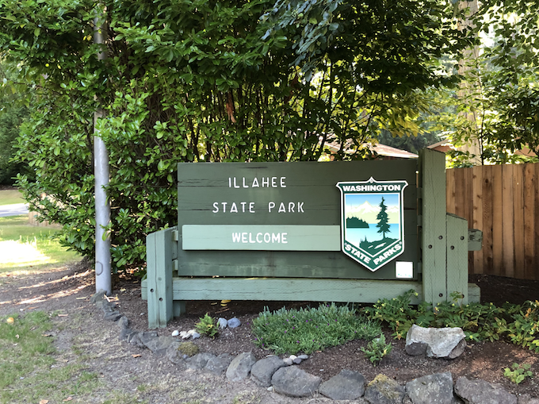
After a Saturday spent resting and re-evaluating our enthusiasm towards travel with small kids, we summoned some vigor, and a bit of vim, and decided to salvage the weekend. Sunday morning we caught an early ferry to Bremerton and onwards to some state parks.
By 9am it was evident it was going to be a great day for the beach. Blue sky, slight breeze, heat. Illahee State Park has a number of definining features – the world’s oldest Pacific Yew tree, a large, stately dock for the boating class and cannons. The beach here, however, is under-whelming. Even the beach glass was sub-par; mostly the thin brown variety of recent vintage with little-to-no wear. Our discerning three-year old wouldn’t waste the time to even pick it up. The Yew Tree had been towered over by Douglas Firs and encroached upon by a maintenance shed. From all appearances it was clearly yearning for more independence. You could tell it was alive if you looked close enough, but absent the signage one couldn’t be blamed for thinking it a common snag. The cannons, at least the kids loved the cannons.
34) Clark Island:

The Pacific Northwest is anything but tropical. Even during our 10 weeks of summer, the native botany, rocky beaches and mountain backdrops will not let you forget where you are. But put yourself onto the white sand beach of the western side of Clark Island on a warm, sunny day and you just might, if you try hard enough, drum up visions of the Mediterranean or maybe Central America. Until you touch the water. It is still really cold.

Clark is a small stick of an island NE of Orcas. Its a 1 minute hike from one side to the other east-west; the west side sandier than the east. Great madrona groves cover the small rise between the two coasts given the scene an appearance of out of this region. It is a glorious little place, probably the best beach we’ve seen in the San Juan’s and maybe all of Washington. Its not a secret to the boat/kayak crowd either. There were half a dozen boats, a few full campsites and a kayaker on a lazy Tuesday afternoon.
We don’t currently own a boat. This week’s island trips have been courtesy of our friends and housemates for the week who recently purchased one. Clark Island is the reason why we may soon be in the market for a boat. With long-distance travel in limbo due to COVID we’re slowly but surely awakening to the wonders our state has to offer. So many of them are marine-based that it seems a shame to not be able to easily reach them.
33) Posey Island:

Our journey from hiking on Stuart Island to dinner on San Juan Island took us past Posey Island. Less than a mile from glitzy Roche Harbor – you can see the glean from the multi-million dollar yachts from its shores – Posey is a postage stamp sized little rock with a few picnic tables and a pit toilet.
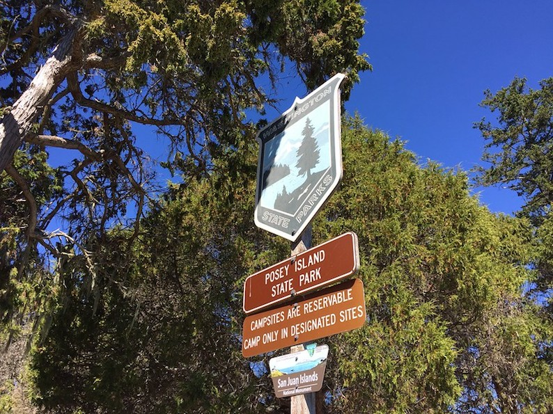
We convinced the captain to pull in as close as he felt comfortable – its surrounded by reefs and rocks – and both of us piled onto a single paddleboard for the short trip over. It was dead calm, the only movement from disturbances caused by passing pleasure craft. Its a good thing too, as it isn’t easy to paddleboard from the front of the board with a moving human on the back. Then again, the water was never more than 3-4 feet deep so the worst that could have happened was an uncomfortable dinner and a good story.
Our stay on the island was measurable in seconds. Our friends both were keeping the boat off the rocks and watching our two kids. The least we could do was hustle along. A (natural) toilet break and a few photos later and we were off. Back onto the paddleboard designed for one and up into the boat. Off to Roche, the Monaco of the San Juan’s. A former lime kiln mill turned playground for the rich and others fortunate enough to be on a watercraft, powered or otherwise.
32) Stuart Island:

Stuart Island is the westernmost of the San Juan Islands. Beyond it lies the Haro Strait and then the Canadian Gulf Islands. Our trip here from Orcas took us up around Waldron and Skipjack, very close the border itself. In normal times, a radio to the Canadian Coast Guard would allow passage to the nearest port of entry. But not now. That border – an imaginary line in the water – is the edge of where we Americans can travel. I hadn’t thought much about that fact until this very moment; that for the first time in my life I wasn’t mostly free to travel outside of our country. There, right in front of me was Saturna Island, not three miles away and access was forbidden.
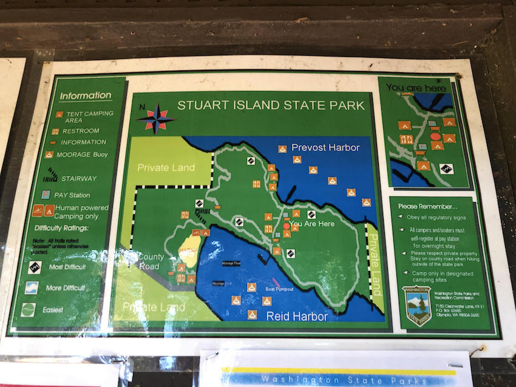
From the near rendevous with the border, we vectored SW and into Prevost Harbor on Stuart’s North Side. Much of Stuart Island is private land. A secluded little community out here at the edge of the country, literally. I suspect that, like much of the San Juans, the population hasn’t grown much over the years, with vacation homes taking from the housing stock and astronomical building costs and limited economic opportunitites failing to replace the lost residents. A common fate in amenity rich, economically challenged regions.
From the dock, we hiked up and over a ridge, along a cliff and down to a sand/rock beach. While the older kids took turns whipping each other with bull kelp, our youngest tried to swallow a rock. A child peed shamelessly on the beach. Yelling, screaming and splashing scared a perched osprey from its roost. A kayak tour approaching the beach landed in the farthest possible location from us; perhaps in the name of social distancing, perhaps self preservation. A childless person may well have looked on our beach gathering with horror; as parents we saw no blood, no tears, all was well. As the snacks ran out and our own hunger built, we trecked back to the boat, through Johns Pass and onwards towards Spieden Island.
31) Moran:

We awoke to a northerly breeze, moderate but consistent. To avoid the chill and the chop, we headed inland to Moran State Park for the morning session – our days bifurcated by the midday nap routine (requirement). Moran was the state’s first major park and one of the largest at over 5,000 acres. Mostly a hiker’s paradise, there are a handful of gorgeous mountain lakes spread throughout. Hiking has a different meaning with toddlers and all involved had been to the peak of Mt. Constitution before so we settled for some beach time at Cascade Lake.

An early arrival provided us with full control of the beach at the roped off swimming area. Slowly the park came to life. First the geese, then the shop workers, a few fishermen and then, eventually, other families to the beach. Our end of the beach was the normal rodeo of fights over splashing and toys, requests for snacks, suncreen in the eyes and brief moments of joy. Parents tagged in and out, usually between hyper vigilance around the water and mindlessly checking our phones.
Erin and I managed to slip in nice paddleboard trips across the lake to the wooden bridge and the small lagoon beyond. The cross wind proved formidable, but neither of us dumped in the water. Hopefully that was enough exercise to justify ice cream and whisky later in the day.
30) Sucia Island:

Sucia Island is known as the crown jewel of the Washington State’s Marine Park system. Its long fingers give it many miles of shoreline – most of them steep cliffs or sand beaches – as well as multiple bays and coves perfect for boat parking.
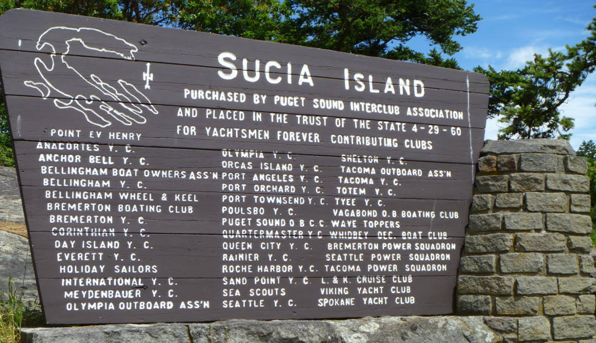
We arrived, slalomed through the dozens of boats moored in the bay and claimed the last remaining spot on the northernmost of the two public docks in Fossil Bay. The kids wanted beach time immediately, we adults made them earn it with a hike first. On the map the trail to Ev Henry Point and back looks like a simple two mile loop. In reality, its a fairly exposed hike and somewhat dangerous, at least for kids. There are some severe drops just feet off of the trail, though with them, views to match. I definitely recommend the hike; leave the children behind.
The beaches are ideal. Very shallow slope with all manner of shells, sticks and sea life. It was busy by remote island standards; practically vacant from the perspective of city dwellers. Other than mask wearing on the docks, you could almost forget about COVID out here. In fact, I think that is what most visitors were trying to do. To bring back some sense of normalcy to their lives with the grandest summer tradition of them all: the beach day.
29) Obstruction Pass:

With an early start from Seattle we made the 7:40am ferry to Orcas with time to spare. A last minute invite to split a house with some friends has us headed to a different island than usual. San Juan County has loosened their travel restrictions and the islands have begun to see more actions – still off from a normal summer, but trending upwards. After our last camping trip, we realized that with two car seats and all the gear that comes with young kids our car travel situation was lacking. We upgraded with a roof box, a new cooler and a large duffel bag. Time to break in the new equipment. Yes, like every other Seattlite, we now have a black Subura Outback with a matching Thule roof rack. Some things are just not worth being original about.

In additional to being a delightful place to spend a few summer days, Orcas Island is also a great jumping off point for many of the State’s Marine Parks. But first a stop at Obstruction Pass park on the main island.
Arriving straight from the ferry landing, we unloaded and packed up for a short hike the beach. The littler one is walking now and took off sprinting for a nearby dog and end up face first in the mud and gravel not 60 seconds after our arrival. Every good vacation starts with some blood on your face. The undulating hike takes you less than a mile to get to a secluded beach looking out to Obstruction, Blakely, Lopez and Shaw Islands. The beaches here in the San Juan vary so in constitution. Some have large rocks, other small, even sand in some places. Obstruction Pass is somewhere right in the middle, the perfect size to making walking optimally difficult. Combined with a slight incline, it is a labor to walk 50 feet on this beach. So we didn’t. We sat, snacked and splashed, watching the chipmunks while being watched by a hungry raccoon. Then back to the car an onwards to the house.
28) Blake Island
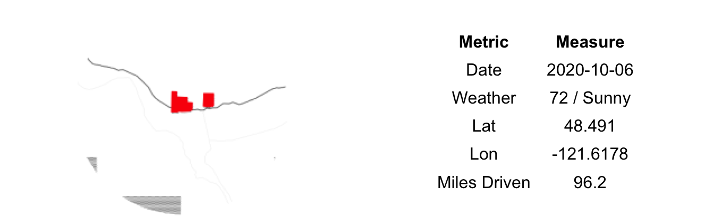
Our Friday night picnic plans for Blake Island had been derailed by a forecast of strong northerly winds. The gale never really materialized, but better safe than sorry when taking small children asea. We rescheduled for the next morning which promised calmer waters.
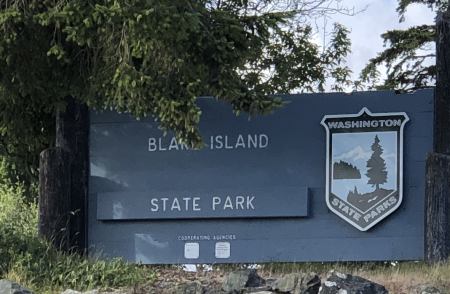
With our friend’s new 28-foot pleasure craft as our trusty steed and an experienced-ish seaman at the helm, the trip over was pleasant. Calm but rainy. The standard cargo ships and ferries to dodge, but few other pleasure crafts about. Ensconced in the cabin, the weather presented no diminishment to the children’s joy of racing across the Puget Sound at 35 knots. Or my own, for that matter. The city and surrounds take on a different look from the water. More grand in some sense, but also more vulnerable. Wider, encroaching, parasitic, almost.
We claimed the last available moorage spot as the wet weather hadn’t kept the weekend boaters away. The campsite was fairly full; a bit of surprise given personal boats or other watercraft were the only way of reaching the island – the Argosy boat was not running due to COVID. But then again, there is little else to do in this time of the plague.
Donning our masks and backpacks, we unloaded the kids, unloosed their life-jackets and released them to scavange the beach and practice their standards acts of foolery. Wet feet, dirty faces and hurt feelings followed as expected. After a short, damp hike through large cedars, blooming foxglove and stinging nettle taller than any of us, we packed the boat back up for the short 15 minute ride home. Not home exactly, but the Elliot Bay marina to be correct. Blake is great little park so close to the city. We’ll certainly be back.
27) Blind Island

Leaving Jones, we had planned to head west to the postage stamp-sized Posey Island, near Roche Harbor. The chop picked up rapidly as we crossed San Juan Channel and we nestled down near O’Neal Island in Rocky Bay to re-evaluate our situation. O’Neal Island is an odd little rock, it has a home and a dock, but the drawbridge to the dock is hoisted many tens of feet in the air, obstensibly to ward off would be pirates. A post trip google search showed the owner to be Ann Holquist Moss, the ex-wife of Jerome Moss a legendary music producer and horse racing socialite. The place looks like it doesn’t see a lot of use, likely a traded pawn in the divorce proceedings.
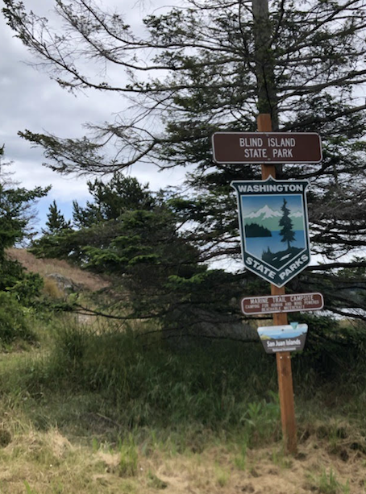
With the weather threatening, we crossed back over the Channel to the safety of the passage between Shaw and Orcas Islands and onwards to Blind Island. It was a rough ride. Steering a small aluminum boat via tiller is a work out in good weather; an outright punishment on the body during rough water. Our stop at Blind Island was hardly a stop. The south wind prevented a clean landing, so I held our position amidst the rocks while Erin jumped out to summit the small rock and grab the requisite photo. If you fly right by Blind Island and don’t notice it on your ferry trip to/from Shaw you can’t be blamed; its a rock with two picnic tables and remnant orchard. There were homesteaders here in 1800s, one descendent of whom lived alone here until the 1960s…doing what, it is hard to say.
Our trip from Jones and our eventual ‘stop’ here showed us the short-comings of a boat that fills the middle between one large enough to handle 10 knot winds and one small enough to pull up onto any beach or rock (a kayak). In good weather, with flat broad beaches, a 15 foot aluminum boat is great for island hopping. If either of those situations doesn’t hold, you find yourself wet, cold and stuck off shore.
26) Jones Island

From Turn Island, we pointed our trusty float NW and headed up San Juan Channel; destination Jones Island. Jones sits off the western edge of much larger Orcas Island. Our trip there – just over seven miles – took some weaving between the Yellow and Low islands group. The wind remained minimal and there were few other boats around. The sky had not cleared. The main point of entry for Jones is the north facing cove. Unlike Turn, Jones has a large dock. Also unlike Turn, the place was busy. All the dock tie-offs were occupied as well as the mooring buoys, mostly by large, live-abourd type boats. We found a spot in the area reserved for dinghies – our 15 ft aluminium boat qualified in relation to the present company occupying this harbor.

Having been in relative quarantine for nearly three weeks, it was an odd sight to see a public place humming with activity. By and large, most groups were social distancing-ish but there is only so much room you give on an eight foot wide dock. Tied off we headed ashore for a hike around the island. The sun poked through the clouds for most of our walk which looped around the western half of the island. There were people picnicing, the local park steward was mowing the large grassy area and kids splashed in the water in the small beach coves. Despite it location and the circumstances, Jones was a busy place, relative to our previous destination and our experience in the San Juan’s for the past three months.
There are some truly magnificent trees tucked into the valley in the middle of the island. Burn scars from the days when the native used fire to clear ground for camas, these monsters are many feet in diameter, growing right up against the rock faces. The sun light slopes are filled with madrona and small pockets of Garry oaks. Like Turn, the forest here is a real attraction to those appreciative of native NW arboreal habitats.
25) Turn Island
To celebrate my birthday (40), we borrowed a friend’s boat and planned a day of island hopping in the San Juan’s. Kids ensconsced with their grandparents, we had the day to ourselves. Home to boat launch was issue-free. Twenty years from my last boat backing experience, I was able to reverse the boat down the launch and into the water on the first try. Erin parked the truck and trailer while I attemnpted to start the motor. I pulled for an eternity and then gave up and rowed over to the public dock. I had likely flooded it. And old sea wolf hanging around the dock agreed with my diagnosis. After some googling, the online crowd of boat owners suggested trying to start it with the throttle wide open. One pull and off we went. First destination, Turn Island.
The forecast called for partly cloudy. Our location was supplying the cloudy part of the mix. The wind held light but steady from the south. We skirted Lopez Island then SW to Turn, which hangs off the tip of San Juan Island, not far from Friday Harbor. The tide was out, -2, and we had an easy time pulling the boat up onto the sand beach and tying off to a picnic table. Turn Island can get a lot of kayak traffic in the summer, but COVID-19 has cancelled all of the tourist activities and we had the place to ourselves.
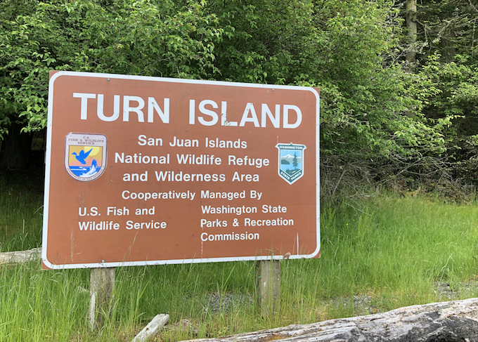
With the low tide we were easily able to walk across Boat Channel and climb up the small islet to the NW of Turn. We couldn’t stay long as we had stumbled onto a Canadian Goose nesting site and were quickly and loudly chased from the area. Back on the main island, we circumambulated on the ring trail noting future camping sites and small coves to expore. The outside of the island is rich with native madronas, junipers and big leaf maples, giving way to large Douglas firs in the interior. Though civilization is easy visible out across the water in all directions, there is a certain immediate sense of adventure being on an island all by yourselves. Turn Island may look like a small blip on the map, but it really is a treasure of beaches, trails and picturesque flora.
On our last leg of the hike, we scared up two raccoons who appeared to have been heading for our boat (and our lunch). We had not closely read the park guidelines on landing; “Food should be kept in secure holds as the raccoons are intelligent and agressive scavengers.” Disaster averted. We untied and push off into the Sound. The motor started on the first pull.
24) Tolmie:

The short haul from the freeway to Tolmie State Park presents an odd combination of land uses. The juxtapositions – distributions centers butted up against churches, parks and small lot subdivisions – viewed through through a seemingly endless progression of round-abouts immediatelyreminded us of our days of driving through suburban Melbourne looking for some random baseball diamond or trailhead. It is the oddest little things that take me back there in an instant.
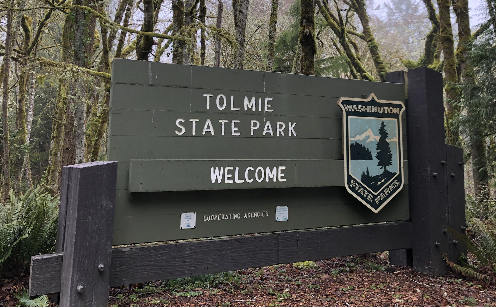
The weather had not improved from our morning trip to Millersvania. The chill hung in the air; visible and almost threatening. There were other people about here. Mostly dog walkers but a few beach-combing families like ourselves. No one went out of their way to distance from each other in the parking lot as the initial COVID outbreak in King County was far enough from here to be a bit out of mind.
We stayed long enough for a snack and a brief hunt for sea glass. The tide was out and shore was muddy; poor conditions for true scavanging. Back to the car and Seattle and the uncertainty of an evolving pandemic.
23) Millersylvania:

The lake was glass; still, reflecting the gray fog that hovered just feet above, cold and silent. This was our first post-COVID outbreak park and the mood was appropriate, scripted almost. A bufflehead diving for a meal broke the silence. It wasn’t reverie – positive and comforting – nor was it necessarily worry, just a sustained sense of uncertainty that percolates through all discussions, planning and thought recently.

Over the creek and through the mud, to the old growth forest we went. Some truly impressive trees remain in the virgin tracks of forest here. Nurse stumps and towering canopies lost in the fog. Our walk was cut short by flooded trails, but well worth the visit. An alleged splinter gained while throwing sticks in the creek required a minor medical (ok, mostly psychological) intervention. The patient recovered fully.
Back at the car, the little one needed a drink, so Everett and I spent some time exploring the empty park buildings – including a beer garden near the beach – and practicing the time-honored art of nature peeing. Suffice it to say, that at 9:30am on a cold March day we were among the few visitors in the entire park and the only ones at the beach.
22) Lake Easton:


A late winter day, above freezing, full of fog. A perfect day for sledding on the beach. The sledding hill at our rental house was steep, like fun, nearly dangerous, for adults, type steep. Almost too much for the kids.
Just up the road, Lake Easton park offered more moderate options. In fact, the best area was the beach. A perfect, consistent slope. The ideal location for a risk-averse three year old, provided one could stop before heading into the open water of Lake Easton.
The smaller one got to roll around in the snow tucked into his hand-me down snowmobile suit. Lake Easton looks like a great summer park, its probably nice for active adventurers in the winter too. I have little else to say about it.
21) Gingko Petrified Forest:
- 2020-02-21
- 46.9545989 -119.99107 | Map
- 42 Degrees, Sunny
- Miles Traveled: 121.2
- Miles Hiked: 0.9
- Sighted: A T.Rex and Pterydactyl
Only an hour from the drenched western slopes of the Cascades, Gingko Petrified Forest and all of the Columbia Basin hereabouts, could hardly be more different. Brown everywhere. The rocks, the grasses, the dirt. Broken only by the black ribbon of highway and the steel gray Columbia rolling on slowly through this dry and desolate land.

Late morning on a Friday in February, we were the only visitors. Perhaps in busier months the Gem Shop just outside the park would poach a few tourist – if for nothing other than photos with its large, dinosaurs monuments – but its lot too was barren. Failing to properly explain to a three-year old how a tree became a rock but still looked like a tree, we ditched the geology for geography and went for a hike down to the water. The small beach area, a rock pile, really, was once home to both a ferry landing and the original bridge over the Columbia. Today’s river is wide and slow and shallow, thanks to the Wanapum Dam. In earlier days the bridge was shorter but the ferry ride probably riskier due to the current. We threw rocks and scouted out the new campground along its banks.
20) Olmstead Place Historical:
- 2020-02-20
- 46.9741714 -120-486091 | Map
- 44 Degrees, Sunny
- Miles Traveled: 78.0
- Sighted:
The working farm country surrounding Olmstead do not provide a building sense of grandeur or majesty upon nearing the park. Were it not for the signage, you’d never know it was there. On a cold but clear Thursday afternoon in February, we were the only visitors, save some salesman using the parking lot to take phone calls and aggressive vape. The park was not ready for us, being locked up and fully winterized.

After a call on nature, we made for a quick tour of the old buildings and farm machinery. It may not have been the most exciting park to date, but it was the most dangerous. A storm had blown many wooden shakes off the roofs of the old building, some of which landed face down with sharp and rusty nails facing straight up. A farm is always in need of repair.
The stop was saved by the discovery of the small creek, now rushing and bubbling from the week’s rains. A short ‘fishing’ session left the eldest child with one wet shoe, muddy pants and inches away from a trip down the creek. The younger one tried to eat a stick and then nearly poked out my eye. We left shortly thereafter, miraculously intact.
19) Iron Horse/Palouse to Cascades Trail:
- 2020-02-16
- 47.402313 -121.791994 | Map
- 42 Degrees, Partly Sunny
- Miles Traveled: 9.8
- Miles Hiked: 0.2
- Sighted: Foundation of an old train repair tool shed
Recently, the Iron Horse Trail State Park was renamed to the Palouse to Cascades Trail State Park. Not all of the sign, websites and our quest check-off banner got the message. The two are used interchangebly on local road signs and both appear on our banner. Thus, we are double counting this visit, if only to keep to the original 136 count of parks. [Note: the double naming appears to hold through much of Kittitas County as well].

Planning to access the park from the Rattlesnake Lake/Ledge area had us worried as the parking lots can be a downright Zoo on the weekends. However, the heavy rain had closed Rattlesnake Ledge hike and the crowds were minimal. We opted to visit the very end of the trail, the last 0.1 miles from the far parking lot of the Cedar River Watershed Education Center to the buiding itself. It isn’t clear if this is actually even part of the park. But it was an old rail bed and a trail and we were hiking it so we’re going to count it – twice, in fact – for our parks quest.
The Cedar River Watershed Education Center (CRWEC?) is surprisingly worthwhile visit. We came for the outdoor water drums and the toilets, we learned a good deal about the local watershed and the history of the valley. There are toys for the kids and 3-D relief maps for adult-sized geography nerds like me. I’m not certain that a museum-type visit is in the spirit of a trail-focused State Park, but we’ll undoubtedly have to cut some corner to get to 136; I see this as a minor cheat, if at all.
18) Olallie:
- 2020-02-16
- 47.4369661 -121.6785458 | Map
- 38 Degrees, Partly Sunny
- Miles Traveled: 45.6
- Miles Hiked: 0.9
- Sighted: A nurse stump with four children
We’ve likely driven by Olallie State Park hundreds of times on our way to and from Snoqualmie Pass and other destinations in and across the Cascades. On our hikes of Mt. Washington, we’ve use the parking lot as well. But never had we ventured into the park proper.

It was bound to happen. We had forgotton our Discover Pass. Olallie doesn’t have an electronic pay station and the paper passes were soaked and illegible from last night’s rain. Though the rangers were parked mere tens of yards away, we rolled the dice and simply left a small note in the window describing our lack of preparedness. Perhaps the sight of two carseats, a pram in the back and a scattering of empty apple sauces pouches and half-eaten Goldfish would suffice in supporting our story of the forgotten pass. A high crime for sure, but a risk we had to take.
The presence and proportion of old growth along the short Weeks Falls trail is a pleasant surprise. There are some truly spectacular Western Red Cedars and Hemlocks within line of sight from the freeway. It is amazing that so many survived the logger’s ax despite being located alongside the old wooden road leading from the pass down to the coast. We had a small snack at down by the rushing river and hustled back to the car…we were parked, illegally, after all.
17) Joseph Whidbey:
- 2020-02-08
- 48.3088922 -122.721877 | Map
- 46 Degrees, Partly Sunny
- Miles Traveled: 83.3
- Miles Hiked: 0.1
- Sighted: Young political activist (or maybe a brainwashed child)
Joseph Whidbey did well by attaching his name to the fourth-largest island in the contiguous United States. Not as well as his shipmate Peter Puget or their captain George Vancouver, but well in his own right. Of the four state parks, however, the eponymous Joseph Whidbey is not the island’s crown jewel, overshadowed as it is by the vistas and variety of landscape forms of its southern counterparts.

Or, perhaps, being the last park of the day for us, we’d given it short shrift. We were running up against our deadline for returning home so we had intended an in-and-out here; a visit for the sake of crossing it off the list. Weary travelers – childless and a bit free-er than usual – but still tired in that eternal, parents-of-young-children sort of way.
There was a delay getting into the park. The main lot was full (6 spaces), but we grabbed the last remaining spot at the auxilery lot up the hill (3 spaces). Both other cars were empty but running. A line formed at the toilet. Others were intending to use this park for its bathroom facility and move on, much as we were. I jogged down a side trail, found a prime location overlooking the flooded picnic area and made a call on Mother Nature as the former inhabitants – The Lower Skagit, Swinomish, Suquamish, Snohomish - did…long before Joseph (and Peter and George) sailed the Salish Sea. On the road again.
16) Fort Ebey:
- 2020-02-08
- 48.21862 -122.7720772 | Map
- 47 Degrees, Partly Sunny, Windy
- Miles Traveled: 9.4
- Miles Hiked: 3.6
- Sighted: Bald eagles, multiple
En route to Fort Ebey, we made a stop at Ebey’s Landing. So had much of the rest of Whidbey’s active population. Or at least it felt that way due to the small parking lot and busy trailhead. The history of the site is interesting, but we had come for the hike. True, it wasn’t officially part of Fort Ebey State Park, but this is a technicality due to jurisdictional alignments and governmental funding that i’ll overlook in this entry.

The Bluff Trail provides a 3.5-mile loop hike full of views and rugged shoreline. It isn’t hard – 260 ft elevation gain – but the upper side offers the prospect of rolling down the long incline into the lagoon and the beach hike is uneven and soft, making for slow headway. Ah yes, but it is rewarding. A number of eagles soared overhead, fishing and hunting in the grass and water below. The surf and tide were up, providing that calming marine sound of rocks washing over rocks with each retreating wave.
After the hike, we eventually made our way to Fort Ebey. Much larger in size, the main attraction for day visitors are the battlements. Having our fill of military history, we didn’t linger long. It looks like a great place to camp in the summer, perhaps we’ll return.
15) Fort Casey:
- 2020-02-08
- 48.1644391 -122.6862763 | Map
- 46 Degrees, Partly Sunny, Windy
- Miles Traveled: 13.3
- Miles Hiked: 0.5
- Sighted: Lebowski flying a kite
Together with Fort Worden and Fort Flagler, Fort Casey provided protection for the Puget Sound during the first half of the twenty century. Its large battery was never used, save testing. Where Fort Worden is grown over and end-of-world looking, Fort Casey has been kept cleared and even repainted (partially) recently. It goes without saying that it is a wonderful thing these fortifications were never used; the glorious side effect of our war preparations are the amazing open spaces and parks that we now have. Without these former bases, this land – strategically located with amazing water views – would no doubt be privately held, inaccessible and less environmentally managed. Silver linings.

The wind blew hard from the north, creating ideal kite-flying conditions on the open field behind the battlements. Young kids reveling in their, mostly, failed attempts to keep kites in the air. And one old dude. Quite nearly, the Dude, Jeffrey Lebowski himself. Clad in short and sandals, he had not only the look of 1990’s Jeff Bridges but the mien as well. “Kids be damned, I’m going to monolopize the center of this field with my two-handed, custom-built kite/parachute.” His challenge was not keeping it airborne, but rather in ensuring his flowing locks and manicured beard didn’t become entangled in the lines. Sheer joy on his face. It takes it all kinds.
Erin is a lighthouse fanatic and was dissappointed to find Fort Casey’s covered in scaffolding and closed for the season. We explored the battlements for a bit, thankfully we hadn’t spent days in the ammunition loading room with 20 tons of explosives and a handful of other sweaty 19-year-old men. It puts your own workplace complaints into perspective very quickly.
14) South Whidbey:
- 2020-02-08
- 48.0565374 -122.600047 | Map
- 42 Degrees, Overcast
- Miles Traveled: 36.8 (Vehicle), 2.8 (Ferry)
- Miles Hiked: .6
- Sighted: The Langley Arcade
Freedom! Erin’s parents had the children for the day and we had a plan to explore Whidbey Island and check four state parks off our list. The weather was standard February in the NW: mid 40s, cloudy with rain about. An improvement from the drenching week we had, but a chilly day, nonetheless. A drive to Mukilteo, a ferry to Clinton, a pit stop in Langley for breakfast and to the first park, South Whidbey before 9:30am.

We were joined in the parking lot by a sports utility van. A modified livng arrangement/carrier of all manner of outdoor equipment including mountain bike, paddle board, skis and a Thule rack bursting at the seems. Its tri-tone exterior was covered in National Park stickers and other advertisements of the adventurous nature of its owner(s). Here was a true traveler. It turned out to be a young guy and his dog. The SUVan their home for some time. If I sound a bit critical it is only out of jealously. We, feeling young and carefree, were immediately reminded of the relativity of our fleeting freedom. But then again, we had done this too in days gone by, sort of, at least. Nostalgia replaced jealousy and we headed down the trail for a short hike.
The mud and our big plans for the day cut this hike short. That and the fact that the beach trail was closed due to recent flooding. We stopped to take a selfie to send to the kids, when a large eagle swooped down near us, creating a well-timed expression on Erin’s face as I snapped a photo. On our way back up the trail our adventurous friend asked, somewhat mockingly, if that was it for our hike today. Condescending little turd. So we let all the air out of his SUVan’s tires once we got back to the parking lot. Don’t mock us adventure-dude.
Actually, we didn’t do that…but the thought crossed my mind.
13) Federation Forest:
- 2020-01-26
- 47.15636 -121.72045 | Map
- 44 Degrees, Overcast
- Miles Traveled: 83.3
- Miles Hiked: 1.1
- Sighted: 18ft Tall Alanis Morisette (White River Amphitheater Billboard)
To the mountains for our final stop of this four-park day. Traffic was moderate, with a steady stream of late risers making their way to Crystal Mountain for the day. The Federation Forest Interpretive Center and main parking lot were closed. We continued on to the mud pit/pull off area at the far eastern end of the park.

Just a short walk takes you back into the old growth forest, multiple hundreds of years back, actually. Saved from the logger’s saw by the General Federation of Women’s Clubs in the early 20th century, it not pristine in the way that the Redwoods are, but inspiring nonetheless.
The spongy flood plain maintained a hint of the week’s earlier snowfall. Cold, but we were now far enough from the sea to have lost some of that damp chill. Our progeny were generally unimpressed by the massive trees. One had milk on his mind, the other just wanted to throw rocks in the water. In the end, they both won out and our hike was cut short. So great that a few of these trees still exist; so sad also.
12) Nolte:
- 2020-01-26
- 47.27132 -121.94334 | Map
- 46 Degrees, Sunny
- Miles Traveled: 3.9
- A car on a trailer in the ditch
This was a check off stop. Or at least intended to be so. The sun peaked through the clouds and the small depression in which the lake resides kept the wind at bay.

A number of young families crowded the beach, children working on the perfect cast with their Mickey/Minnie Mouse fishing poles. Ever the observer, Everett was content just watching the young anglers. Hawkins, wrapped in his size-much-too-large full body fur suit just wanted to move about. So I set him on the picnic table and let him clambor around a bit. It is possible he was mistaken for a small blue dog. It is hard to say. Most adults at the park were too busy dodging errant hooks and replacing missing worms to be bothered with our machinations.
Its a nice park. The grounds are well kept, the facilities aged in that underfunded, heavily-used way. The information on bulletin board; relevant but out of date. The fish were not biting, though perhaps anglers of higher skill may have had luck. I had never been this way before and likely never will again, but its a nice park…more than we had expected.
11) Kanaskat-Palmer:
- 2020-01-26
- 47.31945 -121.916707 | Map
- 44 Degrees, Overcast
- Miles Traveled: 13.7
- Sighted: A cyclist with a flat tire
Only a few miles of river separate Kanasket-Palmer and Flaming Geyser Parks. But is a wild, cliff-lined river, not exactly amenable to road building. Thus, driving from one to the other is a 20 minute, sinuous affair.
Thought it wasn’t much warmer, it was snack time so we settled down into a small ‘beach’ area near the river to eat. A mud flat, really. The river was mad with January rain, rushing over the exposed rocks and almost over the far bank. Nearly as mad as the two kayakers who came hurling down it minutes later. It looked like a wild ride, but they navigated the rapids with ease and were quickly on their way.
As with our earlier stop, we pretty much had the park to ourselves. In the city, dog-walkers keep parks busy from sun-up to sunset. Out here, the parks serve a different purpose and campers are thin this time of year. The collection of empty spaces that are equiped for crowds – shelter, picnic tables, toilets and parking lots – gives an end of the world type feeling. The steel gray sky aiding the aura of doom.
10) Flaming Geyser:
- 2020-01-26
- 47.2771344 -122.0304191 | Map
- 42 Degrees, Partly Sunny, Damp
- Miles Traveled: 47.0
- Sighted: Morning sunrise over the Cascades
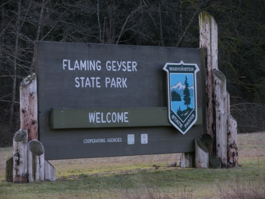
After a crooked route into the Green River Gorge, we crossed a very modern bridge and followed the main route to park next to a not-so modern building. Fire was once the main draw, but that flame had slowly weakened to nothing over the years. Water was now the attraction. Access to the Green River, to be exact. It had rained heavily the night before so the ground was laden, the small creek and the river itself flowing fast. Water in the air too. That damp Northwest cold that no jacket or wind-break can possibly shield you from. It cuts right to the bone. I grew up in Wisconsin and i’d gladly take a 20 degree sunny day there over the damp, low-40s chill we get here.
Geyser is a misnomer. It is pipe drilled 1,300 feet into the ground originally intended to prospect for coal. They found a methane seam, lit it aflame and it burned for decades. Once many feet high, then many inches, now not at all. The park has been re-purposed from spectacle to recreational and it is much better for it. We peered at the faded hydrocarbon darling, caught a feint whiff of methane from down deep and hustled back to the car. We had more parks to see.
9) Squak Mountain:
- 2020-01-25
- 47.4880319 -122.0646835 | Map
- 46 Degrees, Overcast
- Miles Traveled: 58.4
- Miles Hiked: 2.0
- Sighted: A dog driving a Subaru
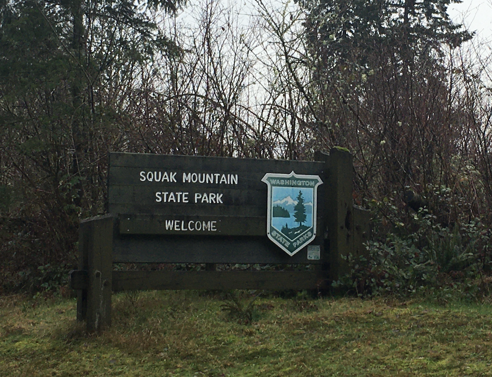
Upon arrival our three year old asked: “Where’s the beach?”. We hadn’t realized it until then, but this was our first non-beach park visit on this quest. It was also our first joint visit, as the Michener-Malcolm family joined us for a hike. Hike is a generous term. More like short, slow walk in the woods with small children. There’s a lot of stops, some whining, stick-play, one face-plant in the mud, some snacks, more whining. We made it multiple miles (2.0) with a few hundred feet of elevation gain all without any major incidents. A small steps on the long journey to reclaiming our once-defining outdoor lifestyle.
Back at the parking lot the fun truly began for the younger generation. Puddles from last night’s rain abounded and none were left unexplored. No boots, socks or pants remained dry either. Toddlers entertaining themselves for 15 minutes is well worth the trouble. Young families were filing in as we packed up to leave. A ‘hiking with kids’ Meetup we were told. Our timing was impeccable. Two kids on the trail is manageable, two dozen is disaster.
8 Down, 128 to go.
.
8) Camano Island:
- 2020-01-20
- 48.1269829 -122.5150792 | Map
- 49 Degrees, Windy and Overcast
- Miles Traveled: 66.8
- Sighted: 1 Refrigerator of Frozen Tea
A few miles down the road from Cama Beach is Camano Island State Park. In place of the small cabins and structured sea wall is a wilder coast as the campgrounds and main park buildings are situated upland and away from the water.

The beach here has a more southerly aspect. Better for sun-bathing on a summer day, but headlong into today’s stiff breeze. 49 felt like 29 as the wind-driven waves pounded the shoreline in front of us. The Olympics and the Cascades, both currently snow-covered, are visible from the parking lot as its orientation points you directly down the Puget Sound and gap between the two. From some vantage points in Western Washington the ranges look distant; from here the Sound looks so very narrow.
Everett and I found a makeshift driftwood fort which we requisitioned and remodeled into a frontier shell store (and general mercantile). I was assigned shell collection duty whilst my partner manned the storefront. Resources were plentiful and soon our shelves were stocked. Few paying customers, however, on a day like today. The big win was convincing the store owner to leave behind his goods for the next kid.
8 Down, 128 to go.
.
7) Cama Beach:
- 2020-01-20
- 48.1452553 -122.5242631 | Map
- 49 Degrees, Windy and Overcast
- Miles Traveled: 48.9
- Sighted: 1 flooded golf course

A re-purposed fishing resort from the 1930s, the defining features of Cama Beach are man-made. The small cabins, wooden boat museum and park support offices sit tightly clustered in a (mostly) automobile-free community right on the beach. New urbanism meets wilderness outpost meets Airbnb. Though the buildings had been restored and some modern conveniences added, on this steel gray day it wasn’t hard to imagine the resort in full swing during the 1930s. Shellfish and the day’s catch being unloaded and cleaned, wood fires burning, whiskey swilled and spilled.
Being a holiday weekend, some of the cabins had been inhabited the night before and some life stirred in this little waterfront ‘community’. We found a mostly wind-sheltered location to drop a picnic blanket and lunch. We didn’t last long, barely enough to eat before the damp wind drove us back up the hill and to the car.
7 Down, 129 to go.
.
6) Deception Pass:
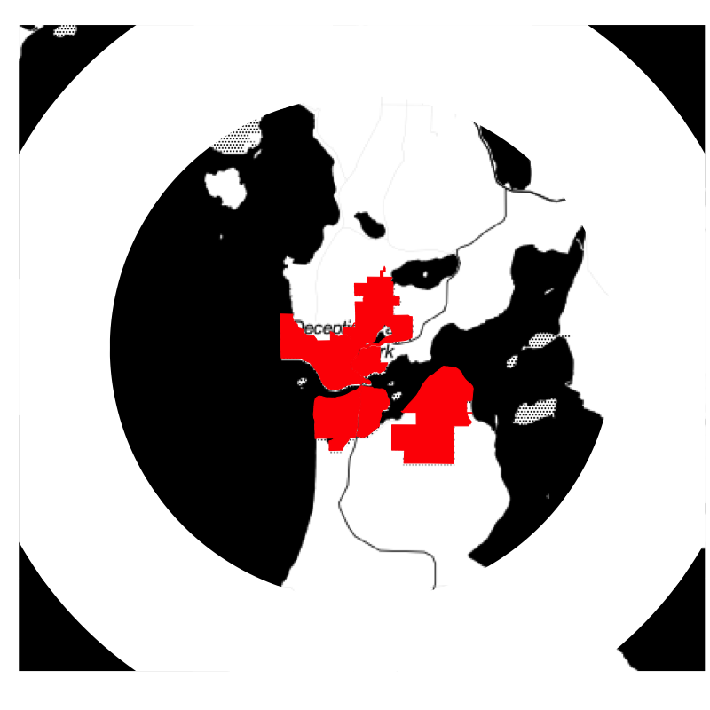
| Date | Map Link | Lat | Long | Weather | Traveled |
|---|---|---|---|---|---|
| 2020-01-20 | Map | 47.39824 | -122.66589 | 48 / Cloudy | 26.2 (car) / 11.7 (ferry) |
Deception Pass is both natural spectacle and monument to human engineering. Tidal ebbs and flows rush through the narrow channel at upwards of 10 mph – a marine river; audible and visually striking – beneath the double span bridge nearly 200 feet above. There’s more than just that: salt and freshwater beaches, multiple lakes and miles of hiking trails.
I had been here before on a hungover morning back in 2005. In such a state, walking along the bridge turned out to be a poor idea and I had turned back without completing it. This time two young children presented another reason to pass on the attempt at a pedestrian crossing. It is a very narrow walkway, separated from speeding traffic on one side by an iron cable and from a 180-foot fall to you death by a 4-foot high railing on the other. Parents, the feint of heart and the clumsy need not apply.
We had been at the beach for no more than five minutes when the oldest’s feet were swamped from behind by a rogue wave. At once both Erin and I scolded: ‘Never turn your back on the sea’. Some significant part of marriage (and parenting) is about becoming the same person. Most of the other part of marriage (and parenting) seems to be about becoming your own parents.
The amphitheater had a compass rose stamped in the concrete. Clever parent that I am, I took the opportunity to explain the cardinal directions to a 3-year old. I was utterly defeated. ‘Why is East East?’. That is a good damn question and one I could not answer. End of science lesson. Let’s go throw some more stick and other sticks.
6 Down, 130 to go.
.
5) Dash Point:
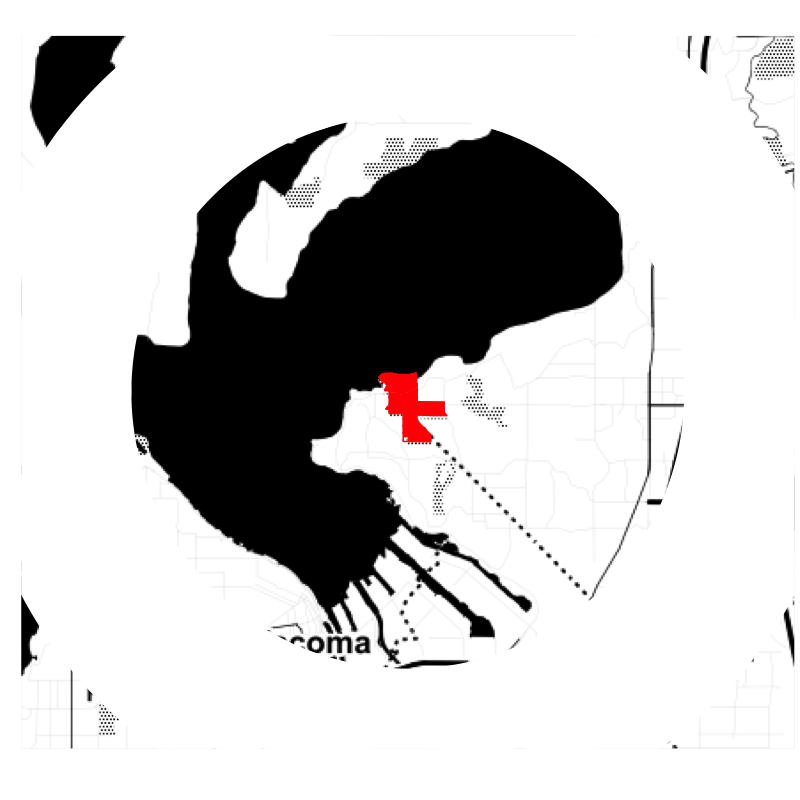 
| Date | Map Link | Lat | Long | Weather | Traveled |
|---|---|---|---|---|---|
| 2020-01-05 | Map | 47.31831 | -122.41627 | 43 / Rainy | 43.0 (car) |
The second park on our first (hopefully of many) multiple park day. One failed park visit already on the books, we would not be denied here. It was raining. So, we geared up and hit the beach. Temperature, 43 degrees. We had brought neither the beach toys nor the rugged and waterproof pram.
Fortune shined on us even though the sun would not. Everett found two discarded sifters on the beach and we were able to fashion our picnic blanket into a make-shift umbrella/tent for Hawkins. The little one didn’t last long outside, but Everett and I collected, cleaned and piled shells until we were soaked.
The hardest part, often, is just getting out of the car. Kids have no problem racing off to play in the rain. Its as if they don’t even notice it such is their focus on the task at hand (play). Its a good lesson; one that us adults would do well to remember. I’m proud of us for braving the weather, the closure and overcoming the instinct to pack it in when it became a little uncomfortable. If one is going to do this thing right — the parks quest, parenting, life, everything, really — a little fortitude and child-like abandon is necessary.
Getting ready to leave the parking lot, there were three families preparing to do a polar plunge. Just when you think you’ve gone off and won the day, someone will show up and put you in your place. Humility, don’t forget the humility.
5 Down, 131 to go.
.
4) Saltwater:
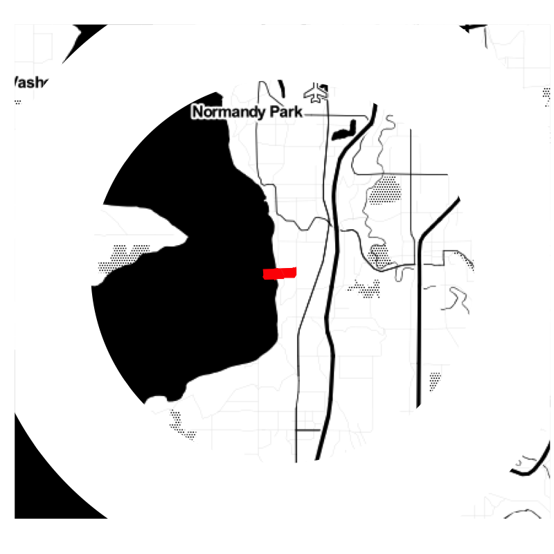 
| Date | Map Link | Lat | Long | Weather | Traveled |
|---|---|---|---|---|---|
| 2020-01-05 | Map | 47.37446 | -122.32377 | 43 / Rainy | 24.2 (car) |
The forecast looked grim, the weather delivered, we persevered…at least in terms of intent. The highlight of the journey was seeing a broken down car-carrier being actively repaired on the side of the road.
‘So, too much poop?’. That was our 3-year-old’s summation of our explanation of why Saltwater State Park was closed on our arrival. The torrential rains earlier in the week had caused sewer overflow runoff to contaminate some of the low-lying areas, thus leading to the park’s closure. Our poor research efforts this morning had failed to uncover these developments. After reading the full announcement from the park’s website (while parked in front of the locked gate), the response from the back seat was ‘So, too much poop?’
Despite this, our spirits were high and instead of heading home defeated we called an audible and headed south to Dash Point State Park.
4 Down, 132 to go.
.
3) Lake Sammamish:
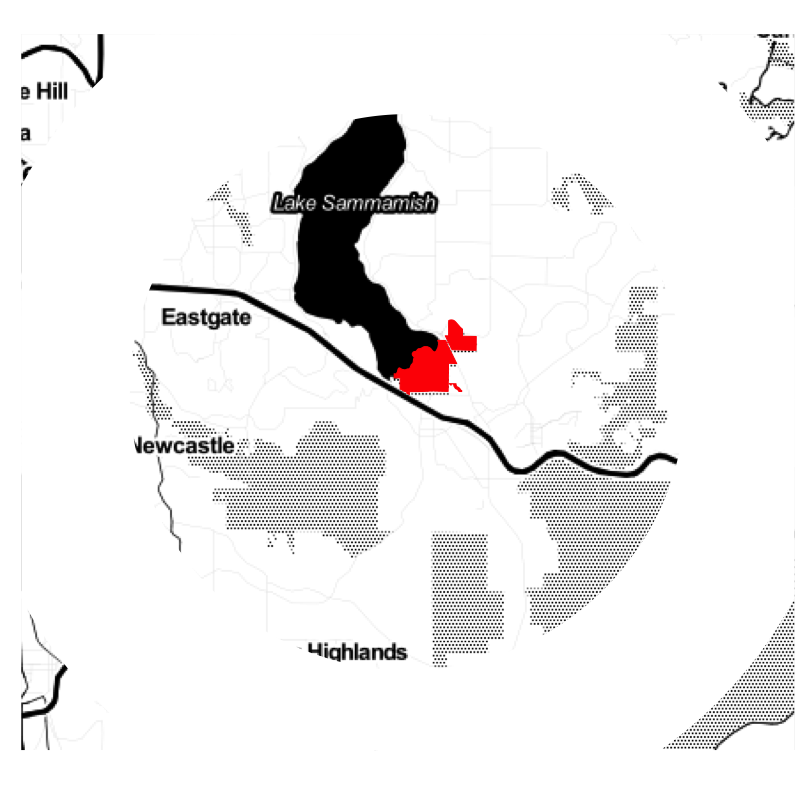 
| Date | Map Link | Lat | Long | Weather | Traveled |
|---|---|---|---|---|---|
| 2020-01-04 | Map | 47.55905 | -122.06507 | 41 / Windy | 44.6 (car) |
A front had moved through last night and gone was the balmy 50+ degrees. In its place a biting wind and threatening clouds. Still early in our State Parks quest and full of vim, vigor and a general dread of being shut up for the entire day, we decided to have a go at Lake Sammamish State Park. The choice of destination was a hedge, however. Lake Sammamish Park is (sub)urbanly-located meaning if the weather drove us off, we could still fulfill a number of other errands without much additional travel.
The weather had kept the crowds at bay and the massive parking lot was mostly empty. The few humans about were walking their dogs. The main park structure, playground and associated grounds had recently been re-done, a marked change from the standard worn picnic tables and cramped toilets. The sense of public investment — crisp design, new structures, clean surrounds — was reminiscent of our time in Melbourne. Our stay at the park was short; in which we took turns speed-walking the stroller around to stay warm. The big hit was the large plastic spoon that was found and used to fling mud at the resident ducks.
3 Down, 133 to go.
.
2) Saint Edward:
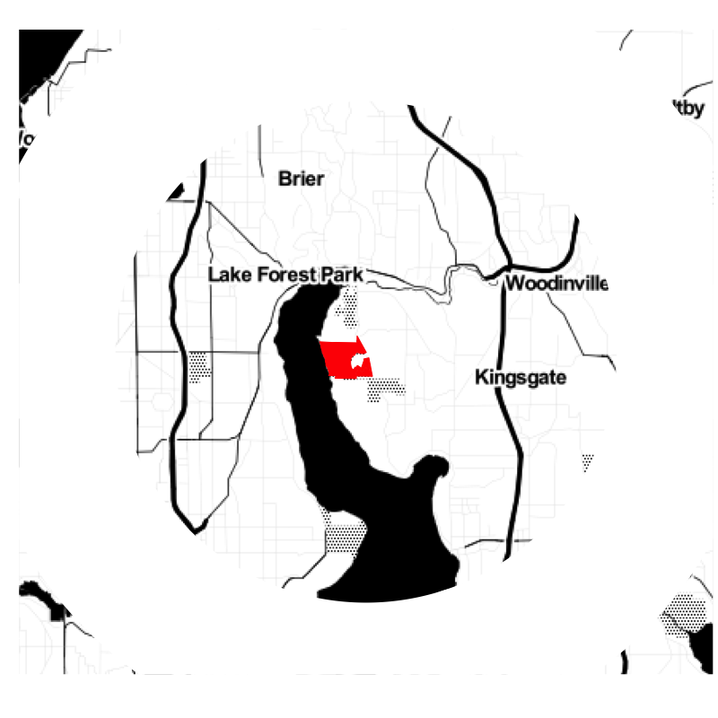 
| Date | Map Link | Lat | Long | Weather | Traveled |
|---|---|---|---|---|---|
| 2020-01-01 | Map | 47.7325 | -122.2591 | 44 / P. Sunny | 22.2 (car) / 1.2 (hike) |
Twenty minutes from our house, Saint Edward is our most quickly and easily accessible state park. The journey was rather uneventful, few people other than parents and, perhaps, athletes-in-training venture out on the roadways at eight-thirty AM on New Years Day. The park, however, was full. Heaping full of young families like our own. In addition to the trails and old seminary building there is a massive, Sherwood Forest-themed playground. Actually, child-castle would be a better description.
We opted first for a hike to the lake and back. The Grotto Trail descends quickly to the water, past hanging moss and radial sword ferns, but oddly, not past the Grotto. Though a much promised attraction, we did not back-track to find it. Our 3-year old rated the hike “Bad: too many mud and roots”. The beach area also lacked enough “sticks for throwing in the water.” His complaints were duly noted and filed with the park ranger.
Post-hike, we entered the melee at the playground. Time was passed silently judging the disciplining techniques of other parents and taking mental notes of design ideas for the tree house we are building at the in-laws. In the parking lot we were accused of being Australian — due to our kids being suited in Bonds clothing — by another couple that had also lived in Melbourne a few years back. We chatted briefly and were on our way home. Within the bustle of daily life we often forget about our past Australian adventure. Little coincidences like this bring it front and center and remind us of: 1) How amazing it was; and 2) Why we refuse to let our intrepid fire die. Smolder as it may during through these years of rearing young children, we shall keep a spark (or two) alive.
2 Down, 134 to go.
.
1) Spencer Spit:
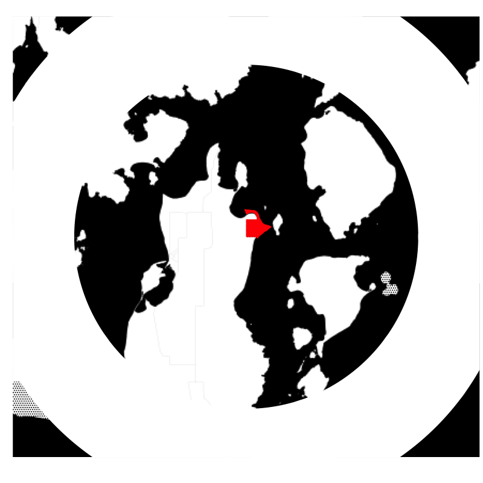 
| Date | Map Link | Latitude | Longitude | Weather | Traveled |
|---|---|---|---|---|---|
| 2019-12-27 | Map | 48.5360 | -122.8612 | 42 / Cloudy | 14.8 (car) |
We were five days into a six-day stay at the in-laws. Sure, Christmas and some unseasonably good weather had eased the psychological toll of having and/or being guests. Nonetheless, patience wore thin. Escape called.
The steel gray, bone-chilling damp days had returned. The eldest child was lured from the house with promises of a beach and eagles and a log cabin and some snacks. All of these were available, or at least possible, at Spencer Spit — the to-be first stop of our WA Parks Challenge. We had been here many times, in fact, Erin had worked here as a junior park ranger during high school. It seemed right to take the first step on our home turf.
The highlight of journey — an eight minute drive — was seeing a white cat perched on a utility box. No tantrums, no detours, no arguments; a solid first step.
But…the park was closed for the season. We had stumbled out of the gate. Or maybe not. This was our Challenge, we made the rules and the rules became only that we had to get a photo of the entrance sign. Physical presence within the park boundary is enough to check the box. It is important to get a thing like this started and important to set expectations. It certainly won’t be the only time we run into a ‘Park Closed’ sign; now we have precedent. Case law, if you will. Plus, we’ll likely be back here many times before we visit all the others.
1 down, 135 to go.
by Andy Krause
andy@andykrause.com